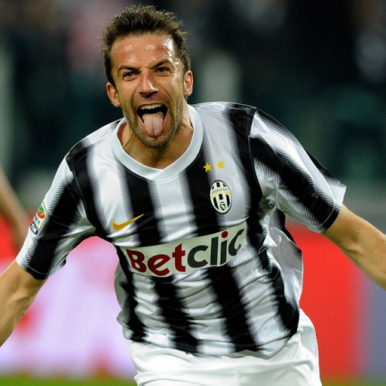
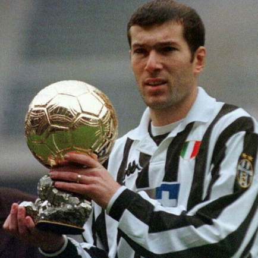
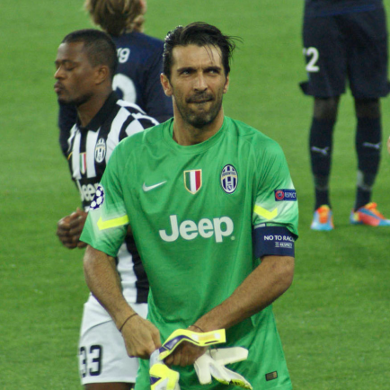
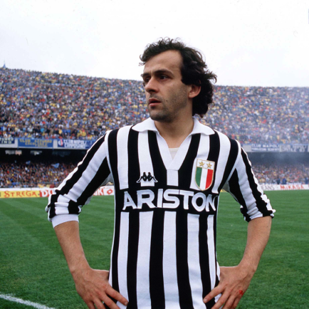

Juventus
A história gloriosa da Juventus se deu a partir de alunos de uma escola de Turim, em 1897. Seu primeiro nome era Sport Club Juventus e o uniforme tinha cores em preto e rosa. A tradicional camisa com listras em preto e branco foi surgir apenas em 1905, logo após a primeira conquista de Campeonato Italiano do clube, liga a qual se juntara 5 anos antes, em 1900.
Títulos
Champions League: 2
Campeonato Italiano: 36
Copa da Italia: 14
Mundial: 2

Ídolos
- 
- 
- 
- 
ALESSANDRO DEL PIERO
Um dos maiores. Está entre os 10 melhores da história do futebol. 'Pinturicchio' ganhou tudo na Juventus, onde desfrutou de 19 temporadas de futebol lendário. Marcou 209 gols em 705 jogos.
ZINEDINE ZIDANE
Um gênio. O francês fez mágica na Juventus entre 1996-2001, que agora é esculpida de forma incontestável na história do clube.
GIANLUIGI BUFFON
De acordo com muitos, o melhor goleiro de todos os tempos. Titular indiscutível até os 40 anos de idade 'Super Gigi' deixou o clube após 17 anos, e certamente irá deixar saudades nos Bianconeri do mundo todo.
MICHEL PLATINI
O jogador francês passou cinco temporadas com a Velha Senhora, uma magia incrivelmente intensa que foi coberta por diversos sucessos na equipe - tanto internamente como na Europa - e, em um nível pessoal, três Bolas de Ouro.
Allianz Stadium
Allianz Stadium é um estádio de futebol em Turim, Piemonte, Itália que hospeda os jogos da Juventus e que é de propriedade da mesma sociedade. O nome oficial do estádio pertence a Allianz, que comprou os direitos de nome do estádio em 2017. Foi inaugurado num amistoso contra o Notts County, da Inglaterra (equipa que inspirou a uniforme da Juventus) e que terminou com o resultado de 1–1 (golos de Toni e Hughes). O Juventus Stadium construída no local onde se encontrava o antigo Stadio delle Alpi e tem uma capacidade de 41 507 pessoas, sendo um dos estádios considerados 4 Estrelas pela UEFA.